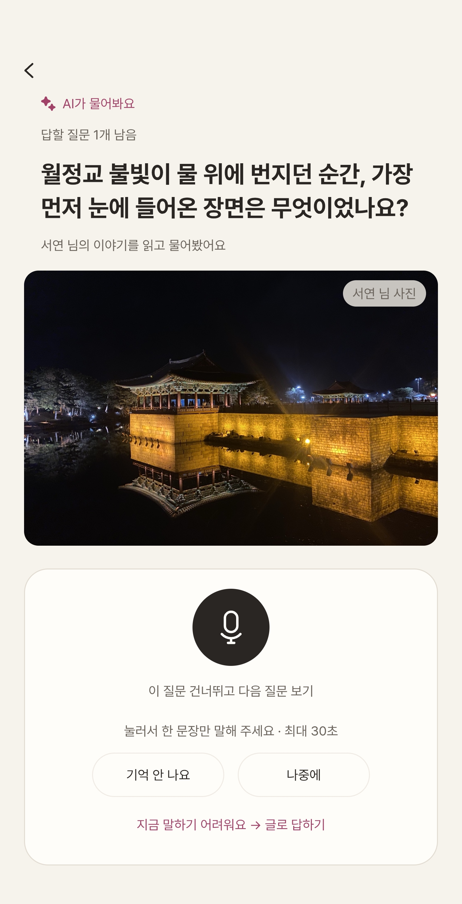
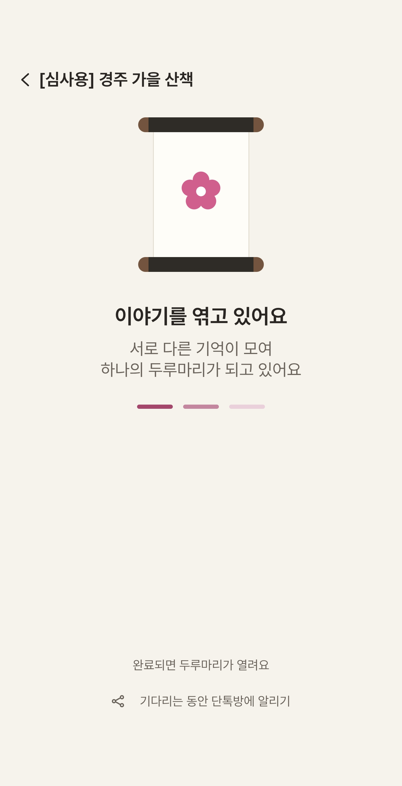
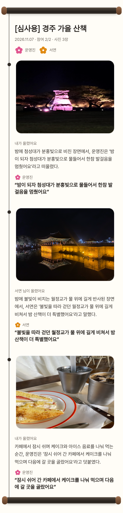
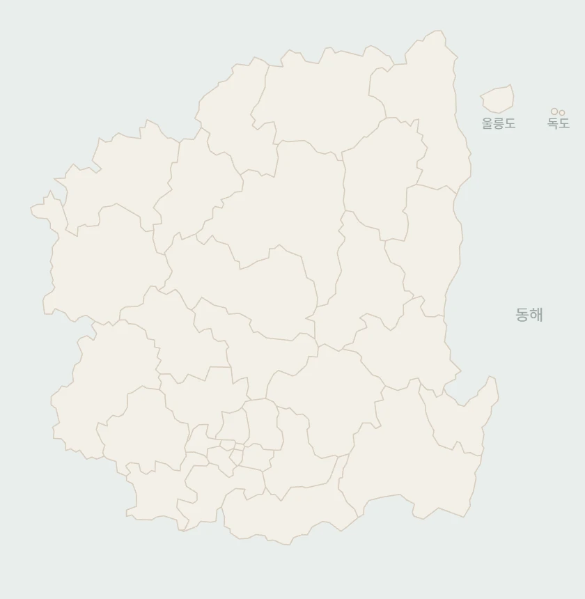
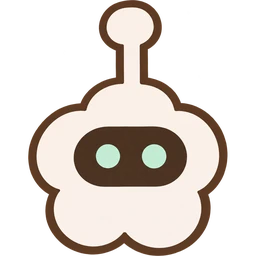
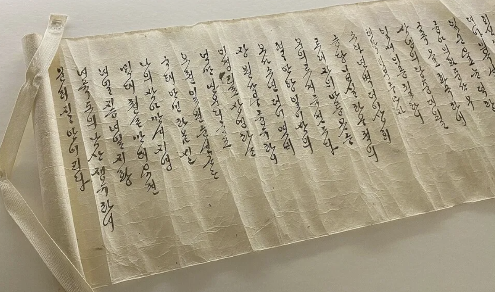

친구들의 기억이 꽃으로 피어요1~8명
모임방의 가지에 우리 각자의 꽃이 피어요. 꽃마다 나와 친구들이 남긴 사진과 이야기가 모여 있어요.
실제 서비스에서 꽃을 눌러 친구들의 기억을 둘러보세요.
꽃 옆 숫자는 사진과 이야기를 더한 활동 수예요
사진은 남아 있는데, 그때 뭘 했는지는 가물가물해요.
사진에 한마디씩, 기억도 함께 남겨요.

길게 쓰지 않아도 괜찮아요. 기억나는 만큼만 남기면 돼요.
이 사진, 왜 골랐어요?
말하면 자동으로 적혀요
말하기 어려우면 글로 남겨도 돼요
📍 경주 · 월정교
불빛을 따라 걷던 월정교가 물 위에 길게 비쳤어
"밤 산책이라 더 특별하게 느껴졌어"
"사진 보니까 그날의 물빛이 생각나"



제공해 주신 여행 사진과 실제 서비스 화면으로 구성한 소개 예시예요.
모임방의 가지에 우리 각자의 꽃이 피어요. 꽃마다 나와 친구들이 남긴 사진과 이야기가 모여 있어요.
실제 서비스에서 꽃을 눌러 친구들의 기억을 둘러보세요.
꽃 옆 숫자는 사진과 이야기를 더한 활동 수예요
다녀온 곳의 풍경으로 두루마리를 꾸며요. 경주의 첨성대, 안동의 하회탈, 대구의 83타워, 포항의 해돋이, 영천의 별과 포도까지.
실제 서비스에서 원하는 템플릿을 직접 적용해 보세요.
기본 템플릿으로 완성한 두루마리예요. 끈을 눌러 펼치고, AI가 엮은 이야기와 우리가 남긴 원문을 함께 읽어 보세요.
원문과 비교해 평가해 주세요. 다시 엮은 기록은 이전 버전과 비교할 수 있어요.
문단마다 하나만 골라 주세요
완성된 두루마리를 이미지나 PDF로 저장하고, 링크 하나로 친구들에게 돌려요.
도시의 꽃을 누르면, 그곳에서 나눈 기억을 AI가 요약해 줘요.

안동 꽃을 눌러, 그곳의 기억을 만나 보세요
지도 속 안동 꽃을 눌러 보세요.
AI 요약과 사진, 원문을 함께 볼 수 있어요.
안동찜닭, 월영교, 하회탈 전시. 커다란 하회탈 앞에서 웃는 얼굴을 따라 해 보며 한참 장난쳤어요. 따끈한 안동찜닭을 앞에 두고, 각자 좋아하는 재료부터 골라 먹었어요.
하루의 끝에는 월영교의 불빛이 물결 위에 번지는 모습을 보며 천천히 하루를 마무리했어요.
안동에서 남긴 기록
“월영교의 불빛이 물결 위에 번지는 모습을 보며 천천히 하루를 마무리했어요.”
“그때 어떤 이야기를 했더라?” 두루가 우리 기록에서 기억을 찾고, 원문과 사진을 함께 보여 줘요.


경북 북부의 내방가사는 두루마리에 필사해 가까운 사람들과 돌려 읽던 기록입니다. 그중 화전가는 봄날 화전놀이를 다녀온 뒤 그날의 즐거움을 길게 적어 나눈 노래입니다.
두루두루는 사진과 한마디를 모아, 함께한 경험을 기록으로 나누는 문화를 이어 갑니다.
서비스를 연 다음 위 순서대로 진행해요.